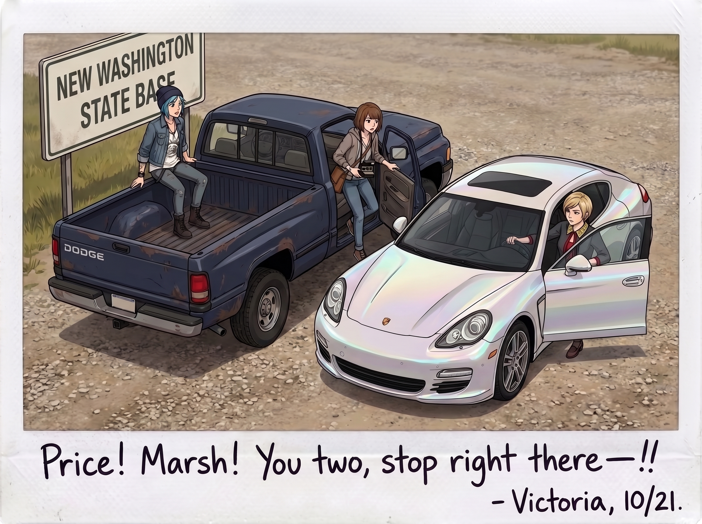
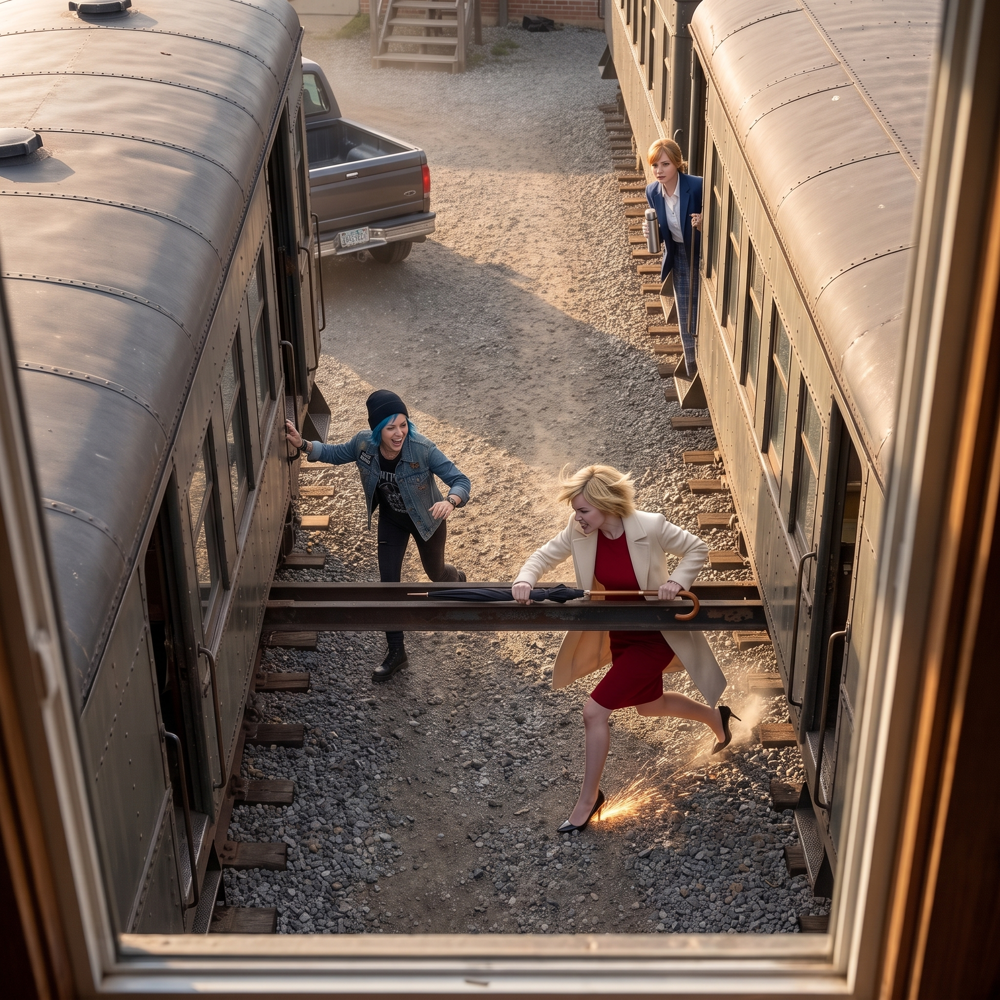
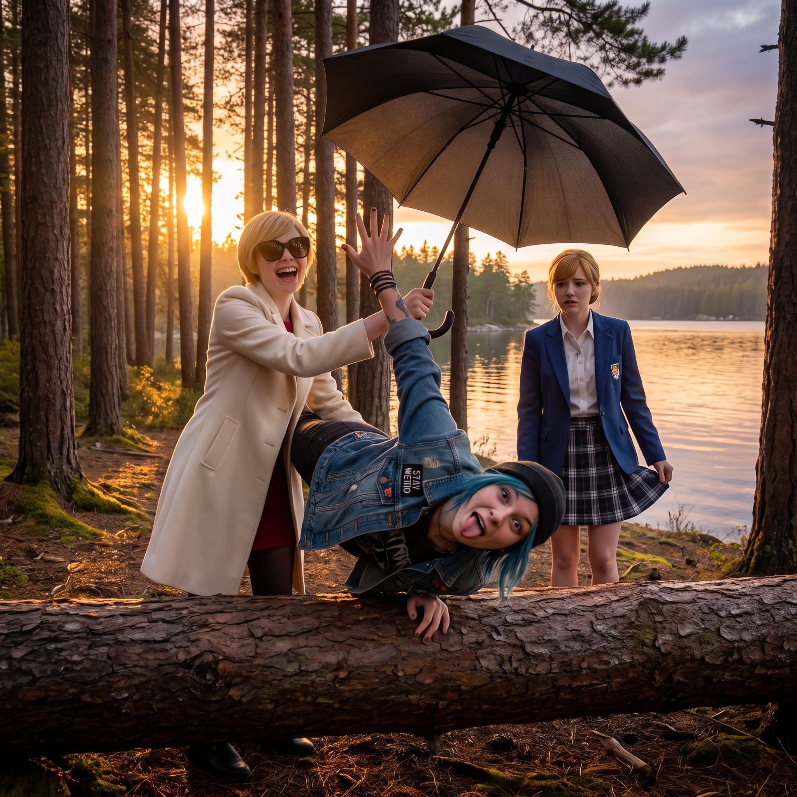
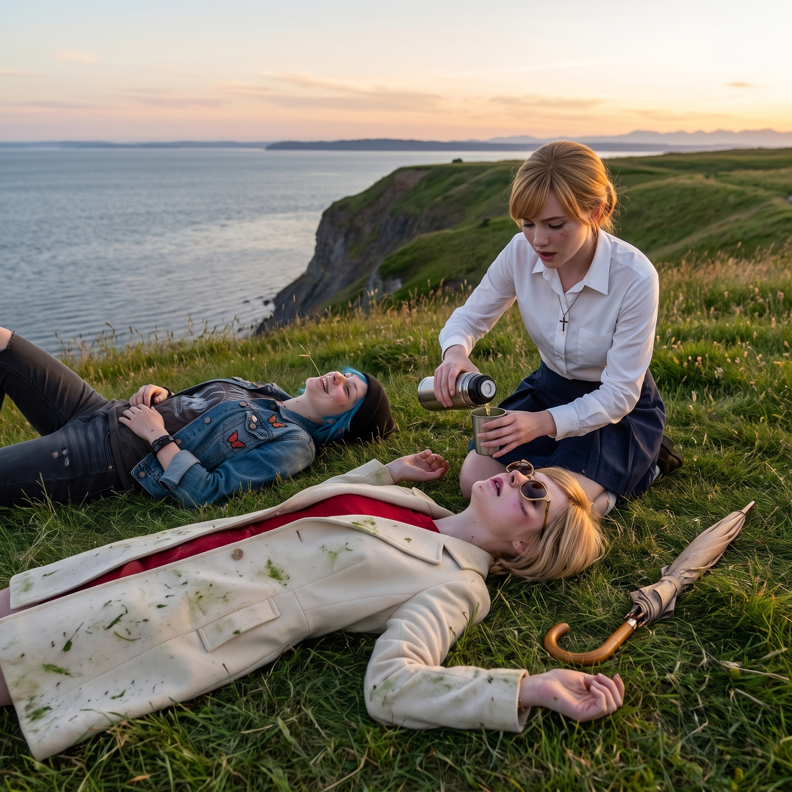

無限電量的觀察者




道奇皮卡與 Victoria 那輛四門保時捷幾乎前後腳駛進了華盛頓州新基地的碎石地，剛一停穩，車門接連打開，在西雅圖憋了整整一天的名媛徹底撕下了所有優雅的社交偽裝。
「Price！Marsh！你們兩個給我站住——！！」
一、新基地的懸崖大逃殺
Victoria 連大衣都沒顧得上脫，隨手抄起放在玄關的那把長柄英國手工雨傘，以短跑衝刺的速度朝著剛跳下車的兩人殺了過去。
Chloe 早就預判了名媛的狂暴化，怪叫一聲，靈活地在兩節車廂中間的鋼架底座間蛇形走位：「救命啊！Chase 夫人回村殺人啦！Max 父母剛剛才誇妳有慈母氣質，妳現在是家庭暴力啊！！」
Victoria 氣得用雨傘尖瘋狂戳著鋼架，高跟鞋在碎石地上踩得火星直冒：「閉嘴！妳這隻把黑料當下酒菜的藍領土撥鼠！我要把妳那張嘴連同皮卡排氣管一起焊死！」
Kate 抱著裝滿司康餅的保溫盒，邁著小碎步試圖往閣樓溜，一邊跑還一邊回頭認真解釋：「Victoria！冷靜一點，生氣會加速膠原蛋白流失的，阿姨說的多吃草莓醬真的對皮膚好呀……」
「Marsh！妳別以為長了一張天使臉我就不敢扣妳的花草種植專項基金！！」
二、無限電量的謎題
作為唯一沒有拉仇恨的「無辜掌鏡人」，Max 甚至連勸架的念頭都沒動過。
她動作嫻熟得宛如戰地記者，三步並作兩步爬上了二號車廂頂部的維修觀景露台，坐在欄杆上晃著雙腿，脖子上掛著雙反相機，手裡還舉著拍立得，嘴裡嚼著薯片，對著下面草坪上的混亂場面狂按快門，甚至還興致高昂地居高臨下吹口哨、大聲場外解說：「Victoria！步幅再加大一點！妳的風衣下擺剛才揚起了一個完美的黃金分割角！」
如果放在其他任何場合——陌生的社交酒會、需要維持得體微笑的家庭聚餐、甚至只是跟不熟的同學多聊兩句——Max 的社交電池早該在十分鐘內見底，整個人縮進帽衫裡進入節能模式。但眼前這場持續了將近二十分鐘、堪稱噪音等級的追逐鬧劇，她卻精神奕奕，全程滿電輸出，沒有一絲疲態。
這個現象曾經讓 Kate 十分好奇，某次追問之下，Max 難得認真地拆解了自己這套「特供無限電量」的運作邏輯。
其一，不需要表演正常。面對陌生人時，Max 的社交能量有一大半消耗在「維持得體反應、確保自己看起來夠正常」這件事情上。但面對這三個人，她完全不需要演——不管她此刻看起來多麼呆滯、多麼愛看熱鬧、多麼毫無同情心地拿別人的糗態當素材，都不會有任何人覺得奇怪，這種零表演壓力，本身就是最大的節能。
其二，沒有未知的風險。跟陌生人相處時，最耗神的其實是那種「我不知道對方會不會誤解我、會不會覺得我很怪」的持續監控。但這三個人早就把她的一切摸得一清二楚，連時間倒流的超能力都知道，任何互動裡都不存在需要提防的未知變數。
其三，鏡頭本身就是她的休息狀態。對 Max 來說，舉起相機記錄從來都不是社交輸出，而是她最原始的放鬆方式——她不是在「參與」這場鬧劇，而是在做她隨時隨地都會做的事：安靜地觀察，然後按下快門。
「所以簡單來說，」Max 對著一臉恍然大悟的 Kate 總結道，「你們三個對我來說，大概是這個世界上唯一不用付電費的存在。」
三、停火時刻：體力耗盡與草坪躺平
追逐戰在海灣暮色中持續了整整二十分鐘。
新基地的草坪實在太大，加上普吉特海灣清涼的海風，三個人最終在懸崖邊的平坦草地上徹底耗盡了體力，毫無形象地東倒西歪躺成了一片。
Victoria 的名牌風衣沾滿了草屑，長柄雨傘扔在一旁，整個人仰面躺在草坪上，胸口劇烈起伏，金絲眼鏡歪在一邊，精緻的妝容也擋不住大口喘氣的狼狽，但嘴角卻在海風中莫名其妙地鬆動了一下；Chloe 呈大字型癱在她身旁半米處，工裝背心被汗浸透，藍髮凌亂，嘴裡叼著一根隨手拔的野草，看著天空傻笑得直打嗝；Kate 跪坐在旁邊，雖然也氣喘吁吁，但還是第一時間打開了保溫杯，倒出溫熱的薄荷檸檬水，小心翼翼地遞給快要虛脫的名媛。
四、海風中的終極定格
Max 踩著鐵梯從車頂爬了下來，手裡拿著剛吐出來、還帶著溫度的幾張拍立得原片。
她走到躺在草坪上的三人身邊，很自然地在 Chloe 和 Victoria 中間坐了下來，將一張抓拍得最精彩的照片扔在 Victoria 的肚子上——照片裡，是夕陽穿透海灣松林的那一刻，揮舞著雨傘大笑的名媛、翻過障礙回頭做鬼臉的機械師，以及在後方提著裙子滿臉擔憂的天使。
「給，二號車廂遷徙後第一場內部軍事演習的頭版頭條。」Max 笑著說，語氣裡沒有一絲疲憊。
Victoria 捏起那張照片看了一眼，嫌棄地冷哼了一聲，但這次沒有再提任何法務起訴或損壞賠償，只是把照片默默塞進了自己的大衣內袋裡。
海浪拍打著懸崖下的礁石，太平洋的夜風帶走了最後的喧鬧。四個人並排躺在新基地的草坪上看著繁星升起，吵鬧與追逐過後，留在這片新天地裡的，只有無可替代的安心與彼此相伴的漫長歲月。